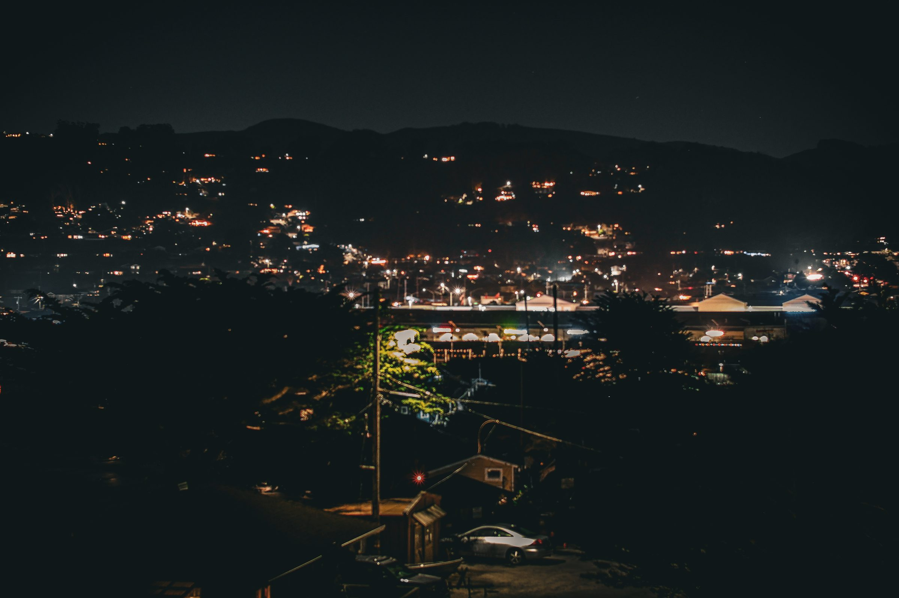
Portfolio
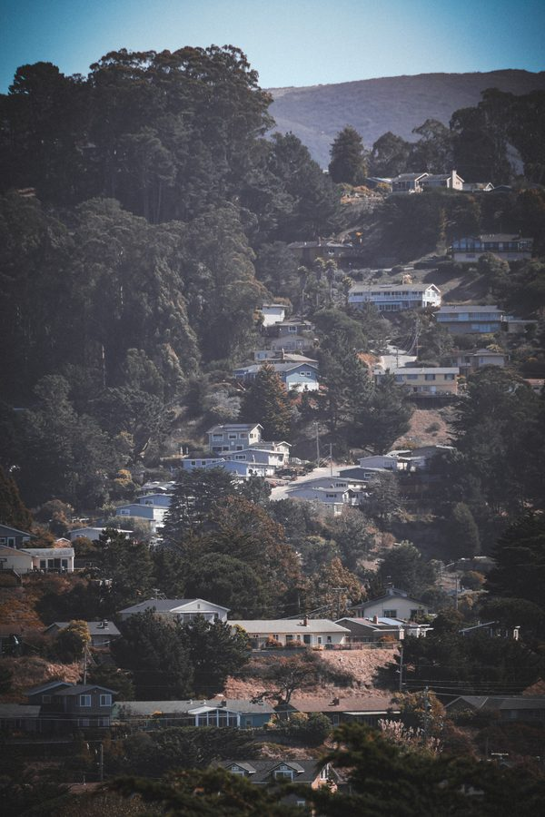
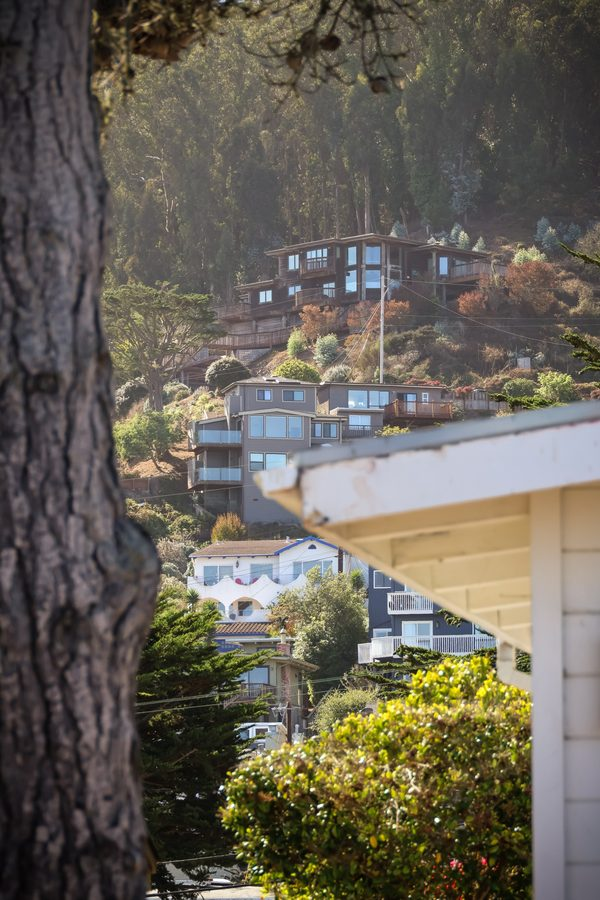
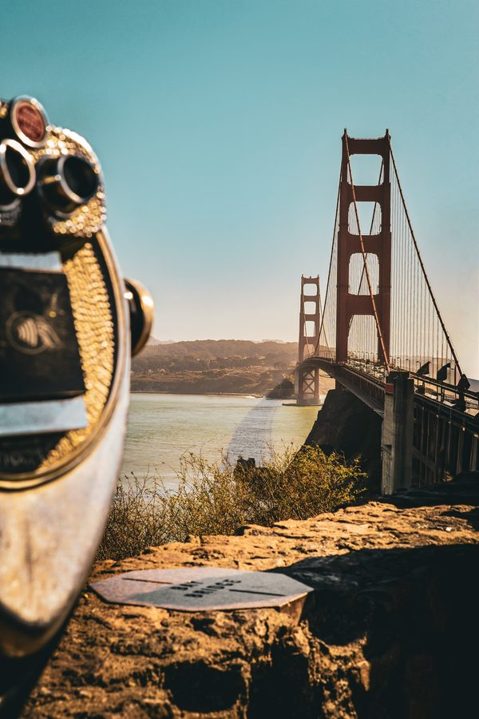
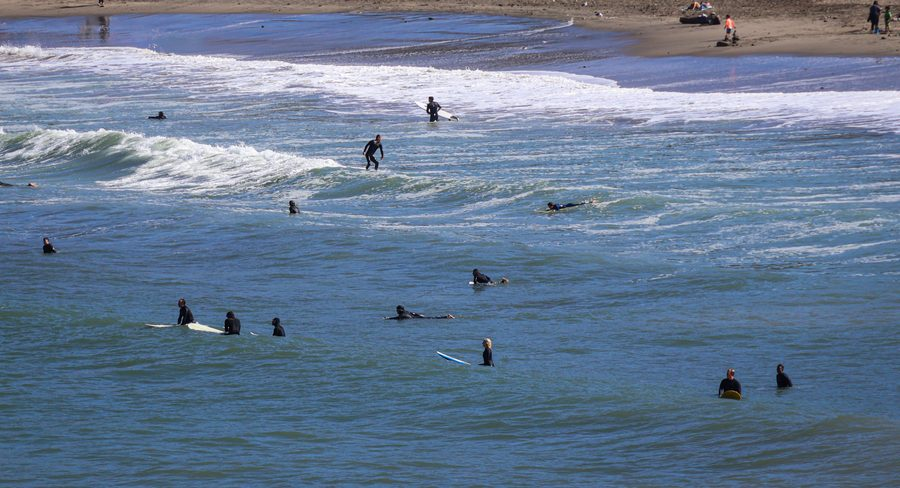
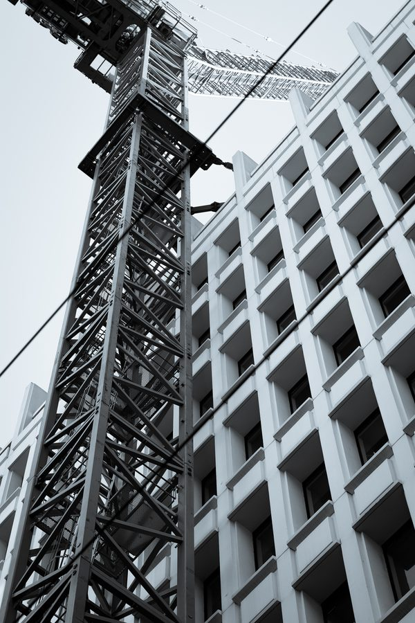
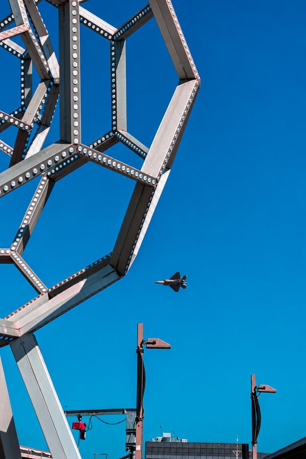
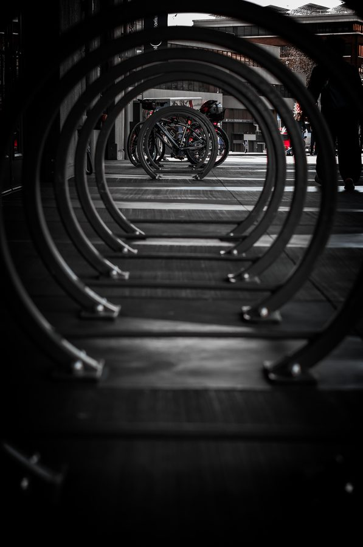
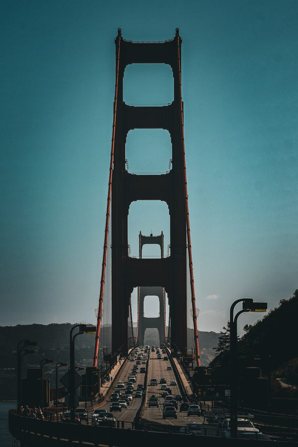
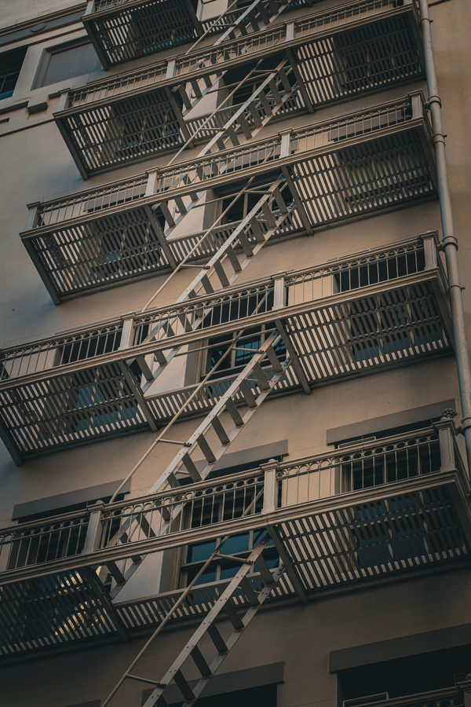
Prints
Each photograph is printed on archival cotton rag in a strictly limited edition, signed and numbered, with a certificate of authenticity.
Shop prints| Size | Edition | From |
|---|---|---|
| 12 × 18 in | of 25 | $— |
| 20 × 30 in | of 15 | $— |
| 30 × 45 in | of 5 | $— |
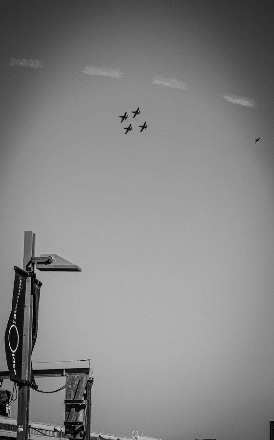
Commissions
Quiet, graphic images of the built and natural world — made for architects, brands and publications, and for walls.
Considered imagery for architects, designers and builders: exteriors, interiors and detail.
Editorial and brand photography rooted in landscape, for hospitality, tourism and publications.
Long-form photo essays and series that follow a place or project over time.
About
[Placeholder copy — replace] Shutter Ridge is the photography practice of Paul Johnson, working between mountain landscape and built form. A short paragraph about approach, background and where the work is made goes here.
Contact
For prints, commissions and collaborations.
hello@example.com